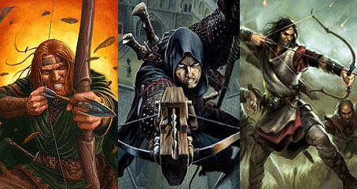

Armi da Tiro ed il Corpo a Corpo
Per utilizzare efficientemente una qualsiasi arma da tiro occorre trovarsi fuori da una qualsiasi situazione di melee, ciò in quanto le armi da tiro sono armi di precisione che richiedono una certa concentrazione per essere utilizzate. In particolare occorre che chi utilizza un'arma da tiro non sia attaccato in corpo a corpo da una qualsiasi creatura. In alcuni casi, però, una creatura può decidere di utilizzare un'arma da tiro su un avversario che si trova in corpo a corpo oppure su un avversario distante ma mentre si trova in corpo con altri avversari. In questi casi, se chi intende utilizzare un'arma da tiro risulti attaccato in corpo a corpo prima di aver effettuato il suo tiro (indipendentemente dal risultato di detti attacchi), costui riceverà una penalità di -4 al tiro per colpire (-2 se si utilizza una balestra da mano o una pistola a pietra focaia) ed una possibilità di fallimento critico dell'attacco aumentata di due punti (un punto se si utilizza una balestra da mano o una pistola a pietra focaia) su tutti i suoi successivi attacchi con armi da tiro effettuati nel corso del medesimo round (costui potrà ovviamente, laddove possibile effettuare altre azioni od abortire gli attacchi). Inoltre, nel suddetto caso, il personaggio che ha subito l'attacco non potrà utilizzare il colpo di combattimento generale "precisione nella mira" per evitare il random shot sui suoi successivi attacchi effettuati con armi da tiro nel medesimo round. Il personaggio che effettua l'attacco con l'arma da tiro, però, non sarà considerato come creatura ai fini dell'applicazione delle regole sul random shot quando effettui i suoi attacchi contro una creatura che si trova in corpo a corpo con lui. Devi ribadirsi che tali penalità saranno applicate ogni singolo round di combattimento solo qualora gli attacchi degli avversari in corpo a corpo giungano prima dell'attacco di chi vuole utilizzare l'arma da tiro. Infine, si noti che, laddove non diversamente specificato, nessuna di queste penalità sarà applicata nel caso di utilizzo di armi da lancio, di attacchi ad essi equiparati o di attacchi a distanza realizzati attraverso incantesimi che richiedano il tiro per colpire.
Precisione della Mira (Random Shot)
Quando una creatura
scaglia un proiettile con un arma da tiro oppure scaglia un'arma da lancio od
utilizza un altro attacco a questi assimilabile vi è una certa possibilità che
il colpo, viaggiando, devi e colpisca una creatura diversa da quella prescelta.
Ciò per un diverso numero di ragioni, si pensi ad esempio alla deviazione dovuta
agli agenti atmosferici od allo spostamento (relativo) della vittima e chi la
circonda durante la traiettoria del proiettile. Per tale motivo quando un
personaggio effettua tale attacco costui dovrà tirare un dado per determinare se
il colpo è stato diretto verso la vittima designata oppure rischi di colpire una
creatura che si trovi a distanza di corpo a corpo (entro 3 metri) dalla stessa.
Questo tiro, quindi, deve effettuarsi solo qualora il bersaglio sia circondato
da altre creature. Per verificare chi è stato colpito si consideri che esiste
una possibilità di colpire ogni creatura tra il bersaglio e quella presente
considerando i seguenti modificatori:
- Il bersaglio selezionato conterà come due creature.
- Tra le creature presenti quelle di taglia superiore conteranno come una
creatura in più per ogni taglia di differenza rispetto alle altre.
Quindi, una volta determinata con tale metodo e per ogni attacco quale è la
creatura colpita chi ha effettuato l'attacco dovrà effettuare i relativi tiri
per colpire contro costei.
Infine, si noti che, laddove non diversamente specificato, non sarà applicata la
regola del random shot nel attacchi a distanza realizzati attraverso incantesimi
che richiedano il tiro per colpire.
Esempio di applicazione delle
regole precedenti: Immaginiamo che un arciere voglie scagliare due frecce
contro un avversario di taglia medium che abbia, in zona di corpo a
corpo, altre due creature di taglia medium (è irrilevante se siano ostili
o amiche). Orbene l'arciere avrà 2 possibilità di colpire il bersaglio
designato, 1 possibilità di colpire la prima creatura a questo vicina ed 1
possibilità di colpire la seconda creatura a questo vicina. Tirerà, dunque, per
ogni freccia 1d4 per determinare la creatura colpita e su questa effettuerà il
relativo tiro per colpire. Per effettuare un diverso esempio, immaginiamo che un
arciere voglie scagliare due frecce contro un avversario di taglia large
che abbia, in zona di corpo a corpo, altre due creature di taglia medium
ed una di taglia large. Orbene l'arciere avrà 3 possibilità di colpire il
bersaglio designato, 2 possibilità di colpire la creatura di taglia large
ed 1 possibilità di colpire ognuna delle creature di taglia medium (per
un totale di 2 possibilità). Essendo, dunque, le possibilità 7 costui
tirerà 1d8 per ogni freccia: con 1-3 colpirà il bersaglio designato, con 4-5
colpirà la creatura di taglia large, con 6 colpirà la prima
creatura di taglia medium, con 7 colpirà la seconda creatura di
taglia medium e con 8 ripeterà il tiro.